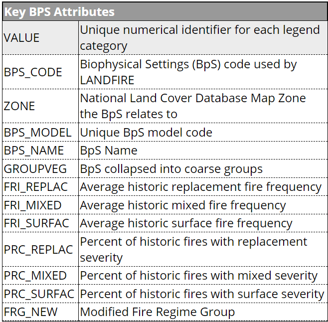
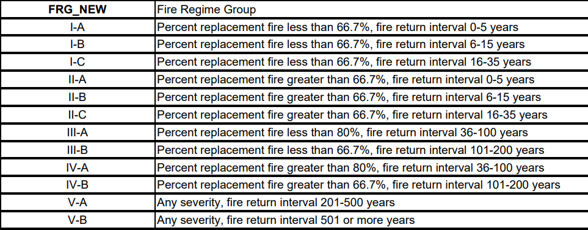
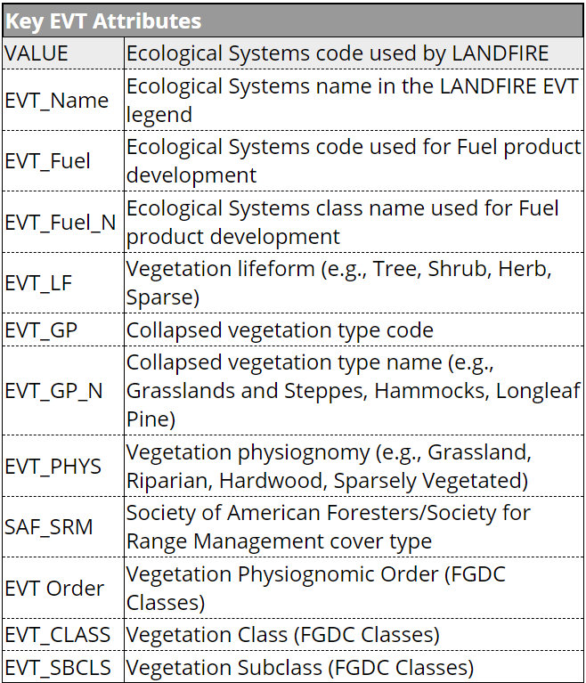
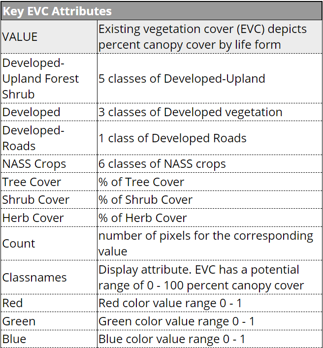

4 Explore the spatial data
5 Explore LANDFIRE spatial data
LANDFIRE, which stands for Landscape Fire and Resource Management Planning Tools, offers a wealth of spatial data tailored to enhance our understanding of ecosystems, land cover, and fire regimes. LANDFIRE data are a comprehensive resource that provide invaluable insights into the landscape and ecological characteristics of various regions.
The robust suite of LANDFIRE data encompasses a wide range of information, including vegetation types, fuel conditions, and fire behavior characteristics. Whether you are a land manager, researcher, or environmental enthusiast, LANDFIRE spatial data serves as a powerful tool for assessing and managing landscapes, informing resource management strategies, and fostering a deeper comprehension of ecological dynamics.
LANDFIRE products are designed to be used at a landscape-scale in support of strategic vegetation, fire, and fuels management planning to evaluate management alternatives across boundaries and facilitate national- and regional-level strategic planning and reporting of wildland fire management activities. LANDFIRE delivers geospatial data products for the entire nation. Methods are based on peer-reviewed science from multiple fields. LANDFIRE products are consistent, comprehensive, and standardized, resulting in multiple applications to fire, fuel, and natural resources.
5.1 Why do I need to explore the attributes of LANDFIRE data?
Exploring the attributes of any dataset is a fundamental step in the data analysis process. It lays the foundation for accurate analyses, informed decision-making, and successful outcomes in various fields, from scientific research to business intelligence.
Although there are many reasons to explore the attributes of your data, we want to highlight three main reasons to understand the attributes of LANDFIRE data before any analysis in GIS or R:
Data Familiarity: Exploring attributes provides a deep understanding of the dataset’s structure, format, and content. This familiarity is essential for making informed decisions about data manipulation, analysis, and visualization.
Understanding Data Quality: Examining data attributes helps assess the quality and reliability of the dataset. Identifying missing or inaccurate information early on can prevent errors in analyses and decision-making processes.
Effective Data Visualization: Exploring attributes aids in creating effective data visualizations. Understanding the range and distribution of variables helps you choose appropriate visualization techniques that convey the intended message and insights.
5.2 What you will learn here
- How to explore the attribute tables of LANDFIRE datasets
- From the LANDFIRE Program website
- In the .csv files for each layer
- With ArcGIS Pro
- Key attributes of four datasets:
- Biophysical Settings (BpS)
- Existing Vegetation Type (EVT)
- Existing Vegetation Cover (EVC)
- Succession Class (SClass)
- The limitations of Succession Class data
5.3 How to explore the attributes of LANDFIRE datasets
There are a few ways you can view the attribute tables of any LANDFIRE dataset
5.3.1 From the LANDFIRE Program website
The LANDFIRE program website is the most comprehensive resource for exploring and understanding the suite of LANDFIRE data. The website can be hard to navigate for some people, so we wanted to walk you through where to find the datasets we’ll be using in this exercise and how you can get more information about each of them.
Navigate to the LANDFIRE Program website - www.landfire.gov
You will find yourself on the main page, where you’ll see several icons across the top, as well as a sidebar of links to the right.
One useful link for exploring the attributes of each dataset is the LANDFIRE Data Dictionary, which you can find midway down the left sidebar. The data dictionary is a comprehensive look at LANDFIRE data and serves as a guide to direct users to information about products, attributes, and metadata. - Within the data dictionary table of contents, you can click the layer you’re interested in and jump to the section of the document that shows the attributes and descriptions of that layer
Another way to explore datasets and their attributes is to navigate to the layer via the circular icons across the top of the page. Where the datasets are located within the broad categories is not always straightforward, however. Most of our datasets can be found underneath the Vegetation category, although Succession Class is under the Fire Regime Category. 1. Click the Vegetation icon 2. Below, you can click links for Existing Vegetation Cover, Existing Vegetation Type, Biophysical Settings, and others. 3. Click on the Biophysical Settings link to navigate to the Biophysical Settings description page. - This page gives you an overview of the Biophysical Settings data, as well as a link to the BpS Attribute Data Dictionary and an image of key attributes in the BpS spatial data layer
Explore the data attributes and description pages on your own for Existing Vegetation Type, Existing Vegetation Cover, and Succession Class.
Remember that Succession Class is under the Fire Regime icon at the top of the page
5.3.2 With the .csv file for each layer
Whenever you download a LANDFIRE dataset, it will be packaged in a .zip file that includes not only the spatial data in .tif format, but also general metadata, spatial metadata, and a .csv data file. .csv stands for ‘Comma Separated Values’ and is a convenient way to display and work with the attributes of a spatial data layer in a non-spatial way (R, Excel, etc.). This allows you to examine your data and understand trends on your landscape without even opening GIS software. It also helps you understand the attributes you may want to map and explore spatially.
Exploring the .csv files of a LANDFIRE spatial layer
- Navigate to the folder where your spatial dataset is stored.
Your data may be stored as a .zip file. You’ll need to unzip the files and store them in a meaningful location so you can find and access them throughout this tutorial
Within the dataset folder or zip file, you should have a folder titled ‘CSV_Data’. Click on this folder to access the .csv file.
Double click on the Microsoft Excel Comma Separated Values File to open it in Microsoft Excel.
If you don’t use Microsoft Excel or you aren’t working in a Microsoft Windows environment, this file may not default to opening in Excel. In that case, right click, navigate to ‘open with’, and choose the spreadsheet program of your choice to view the file.
- Here you can explore the attributes and values of the datasets. We recommend using the metadata and/or data dictionary as a guide to better understand what each of the field names means and what data are being reported under that field.
5.3.3 Within ArcGIS Pro
You can also use ArcGIS Pro to view the attribute tables of each dataset in tandem with the spatial data. This may provide additional benefit, as you can select attributes of interest (a particular vegetation type, for example) and ArcGIS Pro will highlight where that attribute appears in the landscape. You can also use ArcGIS Pro’s built-in tools to generate some basic summary statistics that will allow you to explore the data on a high level.
Exploring attribute tables in ArcGIS Pro
Right click on the layer name in the table of contents to open the layer properties menu, then browse to ‘Attribute Table’. This option can be found near the top of the menu.
This will open the attribute table for the layer. Here you can examine and edit the attributes of the layer.
To explore where a particular attribute value occurs on the landscape, click on the corresponding row number in the attribute table and ArcGIS Pro will highlight those pixels in the map display.
Be sure to use the selection tools in the Map section at the top of the ribbon bar to unselect any rows before doing any data processing. By default, ArcGIS Pro will run all tools on only the selected data and you may end up needing to re-run tools or processes because they were only run on a subset of your full area of interest.
To generate basic summary statistics and charts for your data, right click on the field you’re interested in, then navigate to ‘Statistics’ in the dropdown menu.
This will open a sidebar dialogue with more options. These will change depending on the field type (text versus numeric), but will allow you to view basic summary statistics for numeric fields and format simple charts for all data types.
ArcGIS Pro will also generate a default bar chart for your data. For a text field, this will examine data types by pixel count. For a numeric field, it will show a histogram of values. You can explore the chart options in the sidebar to set the data, the data series, the axes properties, and the format of the chart. These charts can be exported or added to the final map layout.
Bonus Action: Generate a table of summary statistics within ArcGIS Pro
Right click on your layer of interest (in the example below we use BPS_NAME) and select ‘Summarize’ from the dropdown list.
In the Summary Statistics dialogue box, the Input Table should be set to the attribute table you’re currently exploring. You should set the Output Table to a name and location that is meaningful to you.
Examine the Statistics Fields properties
The ‘Field’ will be the field you want to summarize. Use the dropdown arrow to select the field of interest from your table. Here, the question I’m trying to answer is “What is the total count of each BpS (regardless of map zone) in my landscape”, so I have selected COUNT, as I want to examine the total count per Bps Name.
You will then set the statistics type you are interested in. Since I want to know the total count of each BpS, I have selected SUM.
The Case Field is the field or fields in the input that will be used to calculate statistics separately for each unique attribute value. In this case, we’re selecting BPS_NAME, as we want to understand the count of each BpS type on the landscape. Essentially, sum the count by BpS Name.
The tool will run and generate a table that will appear at the bottom of your table of contents. ArcGIS doesn’t give you any information about where that table is, so you’ll need to scroll to the bottom of the Table of Contents to the ‘Standalone Tables’ section in order to find it.
Right click (don’t double click) on the table to open it and explore the summary statistics you just generated. In our case, we have each BpS Name, a frequency value for how often it occurs (my example crosses two Map Zones, so we can see whether a BpS occurs within just one of the Map Zones or both), and a Sum of the count field. This will allow us to easily see which BpS types are most and least prevalent on our landscape.
5.4 Key attributes of four LANDFIRE datasets
As we mentioned above, you can easily view the key attributes of various LANDFIRE datasets and what those attributes mean on the LANDFIRE Program website by looking at the item page for each layer of interest. For this exercise, we are interested in four datasets: Biophysical Settings, Existing Vegetation Type, Existing Vegetation Cover, and Succession Class.
5.4.1 Biophysical Settings
LANDFIRE’s Biophysical Settings data, also known as BpS, represents the vegetation system that may have been dominant on the landscape prior to European colonization and is based on both the current biophysical environment and an approximation of the historical disturbance regime. LANDFIRE uses BpS to depict reference conditions of vegetation across landscapes.
As of 2016, BpS now includes information on the historical fire regime, such as fire return intervals, percent of fire severities, and fire regime groups. Since LANDFIRE’s fire regime information is based on the historic context, we include it with BpS to provide a better picture of the pre-colonization landscape to the best of our knowledge.
The Biophysical Settings attributes correspond with the information in the Biophysical Settings Descriptions discussed in the BpS Description section of this website. We suggest that you review this information for a more complete understanding of the Biophysical Settings attributes.
Key BpS Attributes include:
BPS_CODE: The unique code LANDFIRE uses for each Biophysical Setting
Zone: The NLCD map zone(s) the Bps is located in or relates to
BPS_MODEL: The unique BpS Model code. Ths combines the BpS code with the zone(s) the model is located in. In some cases, a BpS with the same name and BpS Code may be split among map zones because the vegetation or disturbance regimes vary enough that the descriptions differ. An example of this is the ‘Laurentian-Acadian Northern Hardwoods forest’ BpS (13020), which has four different BpS Models, although it is mapped as one BpS type. (See the screenshot below.)
BPS_NAME: The name of the Biophysical Setting. The name is matched to the BpS Code, not the BpS model number.
GROUPVEG: Coarse vegetation type groupings highlighting the high-level dominant vegetation within that BpS. Note that if a BpS is listed as ‘Hardwood’ it may actually be a mix of hardwood, herbaceous, savannah, and more, but LANDFIRE’s mapping identified hardwoods as dominating most of the landscape.
Fire Regime Attributes
FRI_REPLAC: Average historic replacement-severity fire frequency for the BpS
FRI_MIXED: Average historic mixed-severity fire frequency for the BpS
FRI_SURFAC: Average historic surface-severity fire frequency for the BpS
FRI_ALLFIR: Average historic fire frequency for all fires within the BpS
PRC_REPLAC: Percent of historic fires with replacement severity for the BpS
PRC_MIXED: Percent of historic fires with mixed serverity for the BpS
PRC_SURFAC: Percent of historic fires with surface severity for the BpS
FRG_NEW: The fire regime group this BpS is found in. Fire regime groups are based on a combination of fire return interval and fire severity. The current Fire Regime Groups were updated in 2016, and have been modified from a previous classification. You can find the new breakdown of fire regime groups in the Attribute Data Dictionary for the BpS spatial data.
- Fire Regime Groups are assigned as follows:
- I-A (1A): Percent replacement fire less than 66.7%, fire return interval 0-5 years
- I-B (1B): Percent replacement fire less than 66.7%, fire return interval 6-15 years
- I-C (1C): Percent replacement fire less than 66.7%, fire return interval 16-35 years
- II-A (2A): Percent replacement fire greater than 66.7%, fire return interval 0-5 years
- II-B (2B): Percent replacement fire greater than 66.7%, fire return interval 6-15 years
- II-C (2C): Percent replacement fire greater than 66.7%, fire return interval 16-35 years
- III-A (3A): Percent replacement fire less than 80%, fire return interval 36-100 years
- III-B (3B): Percent replacement fire less than 66.7%, fire return interval 101-200 years
- IV-A (4A): Percent replacement fire greater than 80%, fire return interval 36-100 years
- IV-B (4B): Percent replacement fire greater than 66.7%, fire return interval 101-200 years
- V-A (5A): Any severity, fire return interval 201-500 years
- V-B (5B): Any severity, fire return interval 501 or more years
- Fire Regime Groups are assigned as follows:
5.4.1.1 Screenshots of BpS key attributes and the LANDFIRE Fire Regime Groups
Key Attributes of BpS Data

Fire Regime Group Definitions

5.4.2 Existing Vegetation Type
LANDFIRE’s Existing Vegetation Type data, also known as EVT, shows the current distribution (through 2016) of the terrestrial ecological systems classification, developed by NatureServe for the western hemisphere. A terrestrial ecological system is a group of plant community types that are often found together in similar landscapes with similar environmental conditions.
EVT also includes ruderal or semi-natural vegetation types within the U.S. National Vegetation Classification. The LANDFIRE Ruderal NVC Groups Descriptions for CONUS provides info for each ruderal NVC Group, including species, distribution, and classification details.
Key BpS Attributes include:
EVT_Name: Ecological Systems names
EVT_Fuel: The Ecological Systems code used for LANDFIRE fuels product development
EVT_Fuel_N: The Ecological Systems class name used for fuel product development
EVT_LF: Major vegetation lifeform (e.g., tree, shrub, herb, sparse) for the ecological system. Note that if an EVT Lifeform is listed as ‘tree’ it may actually be a mix of tree, herb, savanna, and more, but the ecological system and LANDFIRE identified trees as dominating most of the landscape.
EVT_GP_N: The vegetation type name (e.g. grassland and steppe, longleaf pine, yellow birch-sugar maple forest). This is more specific than the lifeform, but less specific than the ecological system (EVT Name).
EVT_PHYS: Vegetation physiognomy of the ecological system (e.g. Grassland, Riparian, Herbaceous, Sparsely Vegetated)
SAF_SRM: Society of American Foresters/Society for Range Management cover types
EVT_ORDER: FGDC Vegetation physiognomic order (highest level/most general classification - e.g. Tree Dominated)
EVT_CLASS: FGDC Vegetation class (mid level/more specific - e.g. Closed tree canopy)
EVT_SBCLS: FGDC Vegetation subclass (lowest level/most specific - e.g. Deciduous closed tree canopy)
5.4.2.1 Screenshot of EVT key attributes
Key Attributes of EVT Data

5.4.3 Existing Vegetation Cover
LANDFIRE’s Existing Vegetation Cover dataset, also known as EVC, works in tandem with the Existing Vegetation Class dataset to give a more detailed picture of the current vegetation on a landscape. EVC represents the percent cover of the live canopy layer for a 30-m cell.
EVC is generated separately for tree, shrub, and herbaceous cover lifeforms using training data and other geospatial layers. Percentage tree, shrub, and herbaceous canopy cover training data are generated using plot-level ground-based visual assessments and lidar observations.
Key EVC Attributes include:
CLASSNAMES: The main attribute of EVC. This combines the EVT lifeform with the percent canopy cover of each lifeform. Key lifeforms are described below. As with all LANDFIRE layers, you can get more detailed information about the individual attributes from the EVC Attribute Data Dictionary.
Tree Cover: percent tree cover
Shrub Cover: percent shrub cover
Herb Cover: percent herbaceous/grassland cover
Developed-Upland Forest Shrub: Five classes of developed upland vegetation
Developed: Three classes of developed landscapes
Developed-Roads: Pixels identified as roads
NASS Crops: Six classes of National Agricultural Statistics Service defined cropland
5.4.3.1 Screenshot of EVC key attributes
Key Attributes of EVT Data

5.4.4 Succession Classes
The LANDFIRE Succession Class (SClass) product describes the current condition of vegetation in terms of species composition (leaf-form and life-form), percent cover, and the range of heights of each successional state in a Biophysical Setting. SClass can also show uncharacteristic vegetation such as non-native plants, tree plantations, and canopy cover. These additional components are not part of the usual variation in the types and structures of plants in a BpS. The Succession classes don’t directly measure the fuel characteristics of the current vegetation, but they represent specific stages in plant development or how often fires and other disturbances occur.
To produce SClass, mapping rules defined by local and regional experts during the original development and subsequent review of each BpS are applied to the relevant current vegetation layers. SClass mapping rules for all natural BpS are available for download in spreadsheet format.
It is important to understand that the Succession Class dataset alone isn’t incredibly useful. It needs to be combined with the Biophysical Settings Models and Descriptions (see part 1 of this workbook) and the Biophysical Settings spatial data and/or Existing Vegetaion data (see part 5 of this workbook) in order to be meaningful. Without a deeper understanding of the underlying Biophysical Setting and its related successional states and a bigger picture of the current vegetation type, cover, and height, all succession class gives us is a letter without a lot of meaning. All these LANDFIRE datasets are mapped consistently and are meant to be used together to generate the best picture of your landscape condition in the past and present, helping you make a plan for where you want to go in the future.
Key Succession Class attributes include
- Description: LANDFIRE’s Succession Classes categorized into up to five succession classes, with each succession class defined in the corresponding Biophysical Settings model. There are two additional classes – UN for uncharacteristic native vegetation type, cover, or height; and UE for uncharacteristic species (invasive or exotic vegetation types).